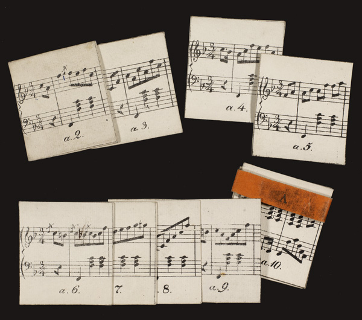

Waltzing forever. Friedrich Kuhlau's Kaleidakustikon

Kaleidakustikon (i)
- Written by Friedrich Kuhlau around 1820
- An aleatoric composition for piano
- Simple three-part structure (denoted capital A, B & C), in F, F or F
minor, and E flat respectively
Kaleidakustikon (ii)
- Consists of 21 piles of cards (named lower-case a to v, excluding j)
- Each pile contains 11 cards numbered 2 to 12 (except h which only contains 3)
- Each card contains one or two measures
- Modern edition exists in Gorm Busk & Jan Maegaard (1996)
Kuhlau kanons
- The cards as presented by Busk
& Maegaard
Mind you...
- I'm neither a musician nor a musicologist, but a software
developer
- This is work in progress.
Why writing an application for it?
- Show the music as one-armed bandit
- Users could listen to the generated tunes in midi
- Let users down-load waltzes as PDF
- In short: Cool proof of concept...
Yeah, cool, but what's the concept? (i)
- We wanted a project where we could encode music in XML.
- At the moment we are much into MEI.
- If we can present aleatoric music, we should be able use the
technologies for philological purposes.
- Need a technology stack for storage, retrieval and
transformation of the cards.
Yeah, cool, but what's the concept? (ii)
- There will be a need for annotation. Almost written one
footnote already
- Turns out that we even need to transpose the music
algorithmically, and annotate the music when we've done that.
Now, lets take a look at the data
- Each layer has been transcribed.
- The transcriptions can be presented as pdf
- and as midi